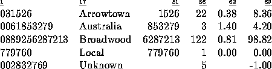

| Telephone Tangles |
A large company wishes to monitor the cost of phone calls made by its personnel. To achieve this the PABX logs, for each call, the number called (a string of up to 15 digits) and the duration in minutes. Write a program to process this data and produce a report specifying each call and its cost, based on standard Telecom charges.
International (IDD) numbers start with two zeroes (00) followed by a country code (1-3 digits) followed by a subscriber's number (4-10 digits). National (STD) calls start with one zero (0) followed by an area code (1-5 digits) followed by the subscriber's number (4-7 digits). The price of a call is determined by its destination and its duration. Local calls start with any digit other than 0 and are free.
Input will be in two parts. The first part will be a table of IDD and STD codes, localities and prices as follows:
CodeLocality name$price in cents per minute
where  represents a space. Locality names are 25 characters
or less. This section is terminated by a line containing 6 zeroes (000000).
represents a space. Locality names are 25 characters
or less. This section is terminated by a line containing 6 zeroes (000000).
The second part contains the log and will consist of a series of lines, one for each call, containing the number dialled and the duration. The file will be terminated a line containing a single #. The numbers will not necessarily be tabulated, although there will be at least one space between them. Telephone numbers will not be ambiguous.
Output will consist of the called number, the country or area called, the subscriber's number, the duration, the cost per minute and the total cost of the call, as shown below. Local calls are costed at zero. If the number has an invalid code, list the area as ``Unknown'' and the cost as -1.00.
088925 Broadwood$81 03 Arrowtown$38 0061 Australia$140 000000 031526 22 0061853279 3 0889256287213 122 779760 1 002832769 5 #
